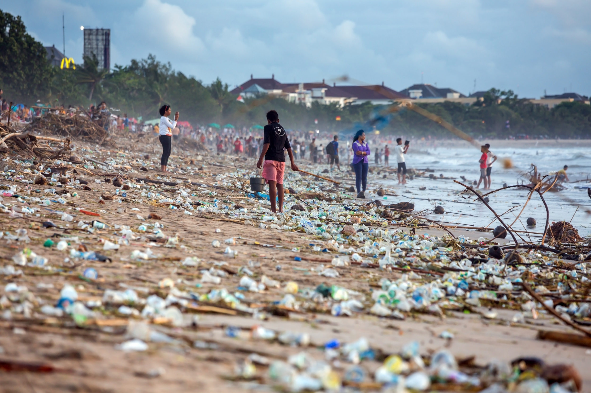

Consumo consciente
30 de setembro 2024

Água, matéria-prima essencial à vida. É impossível imaginar qualquer tipo de vida em sociedade que dispense o uso da água: água para beber e cozinhar, para a higiene do lar e das cidades, para uso industrial, irrigação das plantações, geração de energia, navegação, transporte de detritos, etc...
Temos a falsa idéia de que os recursos hídricos são infinitos. Realmen¬te, há muita água no planeta, porém, da água disponível, apenas 0,8% pode ser utilizada mais facilmente para abas¬tecimento público. Desta pequena fra¬ção de 0,8% apenas 3% se apresen¬tam na forma de água superficial. Ou seja, de extração mais fácil. Esses valores ressaltam a grande importância de se preservar os recursos hídricos da Terra, e de se evitar a contaminação da pequena fração mais facilmente disponível. O racionamento de energia imposto pelo Governo nos dá uma boa dimensão da sua essencialidade.
leia mais ...
Água essencial para vida
30 de setembro 2024
A água é essencial para a vida de todos os seres vivos, pois é um recurso natural que desempenha diversas funções importantes:
Componente bioquímico: A água é um componente fundamental da composição dos seres vivos. O corpo humano é composto por cerca de 70% de água, e a quantidade varia de acordo com a idade.
Hidratação: A água ajuda a hidratar o corpo, transportando nutrientes e oxigênio até as células.
Eliminação de toxinas: A água ajuda a eliminar toxinas do corpo através da urina e do suor.
Reações químicas: A água participa de reações químicas no interior das células, como a digestão de proteínas e a formação de enzimas digestivas.
Solvente universal: A água é um solvente universal, o que significa que dissolve outras substâncias.
leia mais ...
Ciclo da água
30 de setembro 2024
"O ciclo da água, também conhecido como ciclo hidrológico, refere-se ao movimento contínuo que a água faz pelo meio físico e pelos seres vivos do ecossistema, passando através da atmosfera, hidrosfera, litosfera e biosfera. Trata-se, portanto, de um importante ciclo biogeoquímico que faz com que esse indispensável recurso natural esteja constantemente no ambiente."
leia mais ...
Poluição dos Rios e Oceanos
30 de setembro 2024

Consequências do Aquecimento das Águas do Oceano
O impacto do aquecimento das águas oceânicas é abrangente e afeta diversos aspectos do nosso planeta:
Aumento do Nível do Mar
O aquecimento das águas do oceano leva à expansão térmica da água, contribuindo para o aumento do nível do mar. Isso representa uma ameaça para as comunidades costeiras, aumentando o risco de inundações e erosão costeira.
Acidificação dos Oceanos
À medida que os oceanos absorvem dióxido de carbono em excesso da atmosfera, ocorre a acidificação das águas. Isso tem impactos prejudiciais nos ecossistemas marinhos, afetando a vida marinha, como recifes de coral e moluscos.
leia mais ...
DESTAQUES
Juntos, podemos levar água para todos!
É por isso que defendemos essa causa! Água pura salva vidas. O projeto Mais Água é uma iniciativa que transforma a realidade de famílias no Brasil. Com o objetivo de levar água limpa e segura, além de garantir o acesso a um recurso básico para a vida, o programa traz esperança e muda mundos.
Água limpa e abundante depende de sistemas naturais saudáveis no entorno, como as florestas podem ser. Boa parte da água do planeta é filtrada através de bacias hidrográficas florestadas, que melhoram a qualidade da água e protegem o recurso. Grandes florestas, como a Amazônia, ajudam até mesmo a controlar os chamados “rios do céu”, que ditam os padrões de chuva a até centenas de quilômetros de distância.
Histórias inspiradoras
Cinco pessoas. Cinco histórias de vida, de transformação, de doação. Cinco habitantes de cinco estados brasileiros localizados nas regiões Norte, Nordeste e Sudeste. O que todos têm em comum? Água. Melhor: o lento processo de conscientização para a urgência de se tomar medidas para evitar seu desaparecimento num futuro próximo. Com idades entre 40 e 54 anos, essas pessoas passaram por processos de descoberta que modificaram suas vidas e a das comunidades à sua volta. Mais que apenas acumular saberes de ordem prática, percorreram os caminhos nem sempre tranquilos da autodescoberta.
Legislação Hambiental
Em um mundo ameaçado pela mudança climática e redução da biodiversidade, o Brasil pode ser parte do problema ou da solução. A destruição da Amazônia nos condenaria ao isolamento mundial e à perda da condição de potência agropecuária. Para ser parte da solução, em benefício do planeta e de si próprio, com desenvolvimento e sustentabilidade social, ambiental e econômica, o país deve conhecer e respeitar seus biomas, valorizar os serviços ambientais que eles prestam, avançar na substituição das energias fósseis pelas renováveis, aproveitar oportunidades da descarbonização para reindustrializar-se.
Empresas Sustentáveis
Temos um papel fundamental na luta pela preservação, já que possuímos 12% das reservas de água doce do planeta. Isso equivale a 53% de todos os recursos hídricos da América do Sul. Nós da Associação Peixe-boi também ficamos preocupados, rios e mares, o lar de tantos Peixes-boi precisam ser protegidos e a água limpa garante a biodiversidade e manutenção dos mangues e matas ciliares, que protegem nos rios.